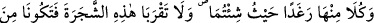
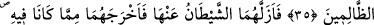
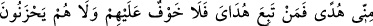
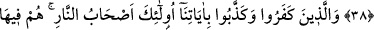
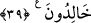

İBLÎS SECDE ETMEDİ
34. Hani biz meleklere (ve cinlere): Âdem’e secde edin, demiştik. İblîs hâriç hepsi
secde ettiler. O yüz çevirdi ve büyüklük tasladı, böylece kâfirlerden oldu.
35. Biz: Ey Âdem! Sen ve eşin (Havvâ) beraberce cennete yerleşin; orada
kolaylıkla istediğiniz zaman her yerde cennet nimetlerinden yeyin; sadece şu ağaca
yaklaşmayın. Eğer bu ağaçtan yerseniz her ikiniz de kendine kötülük eden
zâlimlerden olursunuz, dedik.
36. Şeytan onların ayaklarını kaydırıp haddi tecâvüz ettirdi ve içinde bulundukları
(cennetten) onları çıkardı. Bunun üzerine: Bir kısmınız diğerine düşman olarak
ininiz, sizin için yeryüzünde barınak ve belli bir zamana dek yaşamak vardır, dedik.
37. Bu durum devam ederken Âdem, Rabbinden bir takım ilhâmlar aldı ve derhal
tevbe etti. Çünkü Allah tevbeleri kabûl eden ve merhameti bol olandır.
38. Dedik ki: Hepiniz cennetten inin! Eğer benden size bir hidâyet gelir de her
kim hidâyetime tâbi olursa onlar için herhangi bir korku yoktur ve onlar üzüntü
çekmezler.
39. İnkâr edip âyetlerimizi yalanlayanlara gelince, onlar cehennemliktir, onlar
orada ebedî kalırlar.
Secde emrinin tüm meleklere yönelik olduğu: “Meleklerin tümü secde ettiler”
âyetinden anlaşılmaktadır. Secde itmînân ile tezellüldür.
Şerîat lisânında secde “ibâdet kasdıyla alnı yere koymak”tır. Şer’î açıdan secde
edilen, aslında Âdem değil, Allah’tır. Allah Âdem’in şânını yüceltmek için onu